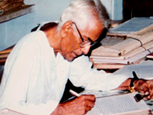

Late Anand Shankar Madhavan
Late Anand Shankar Madhavan, a visionary and legendary luminary sacrificed and dedicated his whole life to the cause of social service and promotion of ideal and quality education for the younger generation.
Being non-Hindi speaking from Kerala, he chose to remain at this remote place with rural surroundings at the foot of Mandar Hills. With a view to propagate Hindi language among the masses, he established Mandar Vidyapith in 1945 and later on founded Adwaita Mission in 1990.
Madhavan, a product of Jamia Millia, an old pupil, and a devout disciple of Late Dr. Zakir Hussain was a staunch nationalist, a great freedom fighter, a true Gandhian, a philanthropist and social worker.
A man of simple living, but high thinking, he was a literary figure, a man of academic repute, a thinker and writer par excellence with philosophical instincts. He wrote more than 55 books on varied subjects viz literature, culture, education, religion etc.